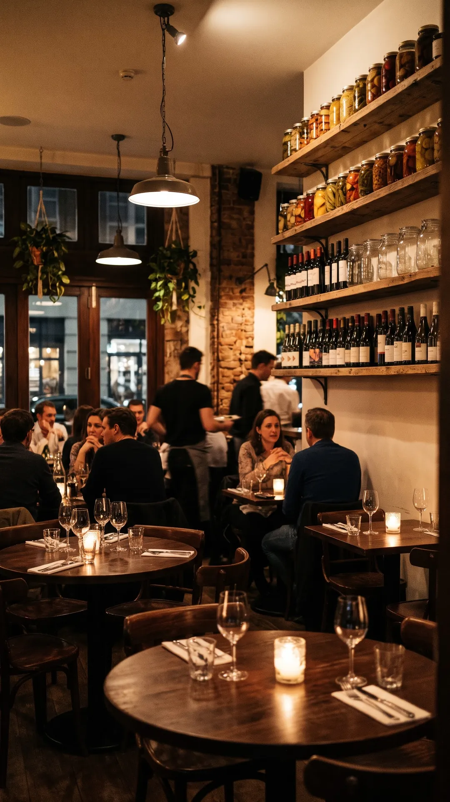
LA NIEBLA
Nosotros
La Niebla es un bistró colombiano contemporáneo que, bajo la visión de la chef Elena Quintero, explora la despensa de la alta montaña a través de menús en permanente transformación, elaborados con productos de fincas cercanas. Creatividad, técnica e investigación se integran para ofrecer una experiencia que honra y proyecta la cocina de los Andes.
VER GALERÍA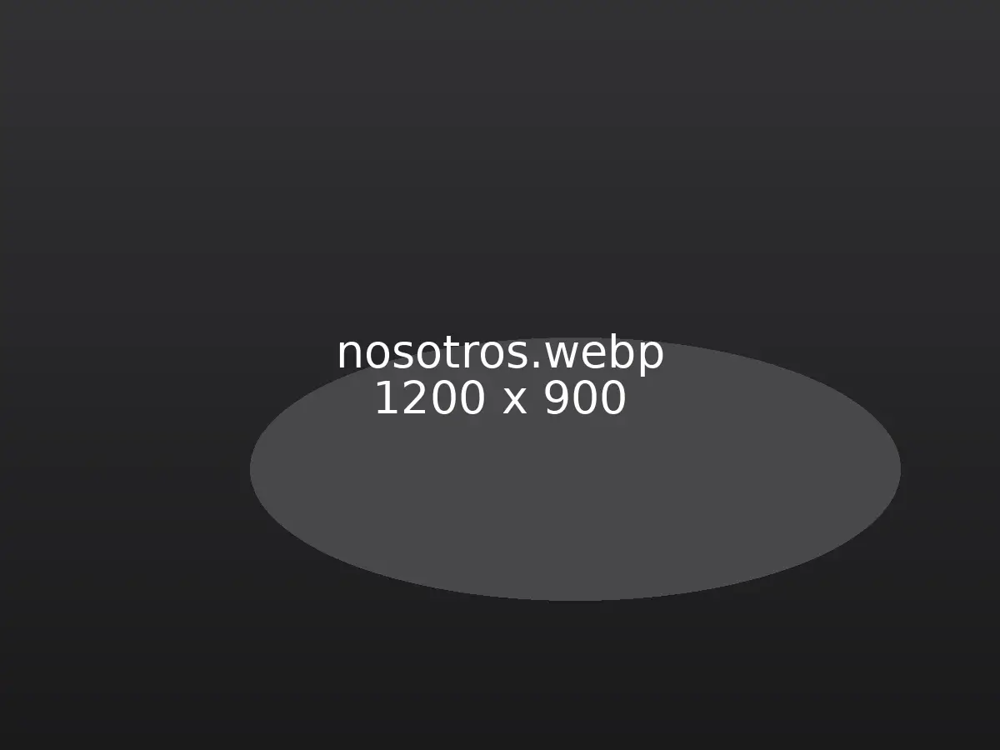
Acerca de
En La Niebla trabajamos de la mano con productores locales, permitiendo que cada plato cuente la historia de la tierra y de quienes la cultivan. Nuestro menú cambia según la investigación, la exploración y la estacionalidad, dando lugar a preparaciones que evolucionan constantemente.
Contamos con:
- Menú a la carta
- Menú degustación
- Opciones vegetarianas
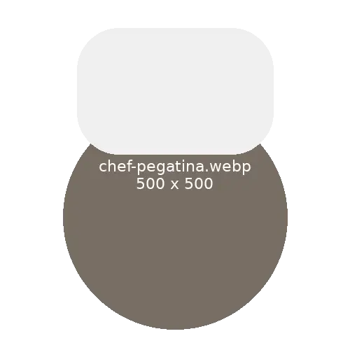
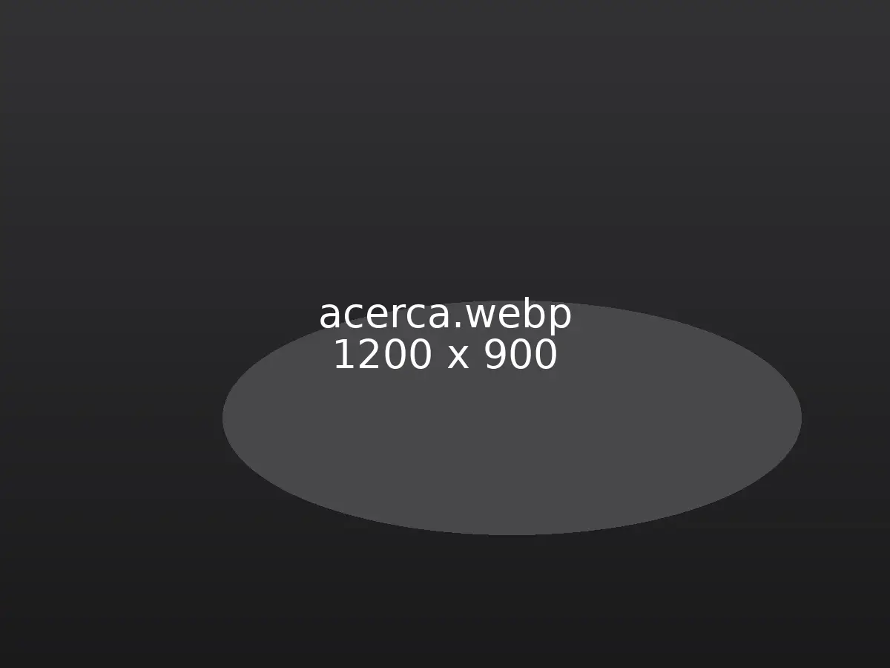
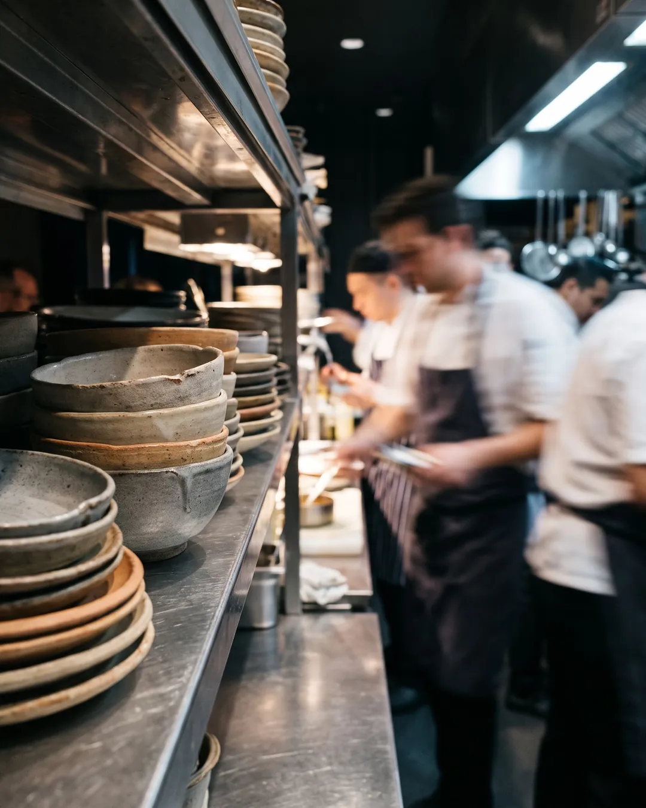
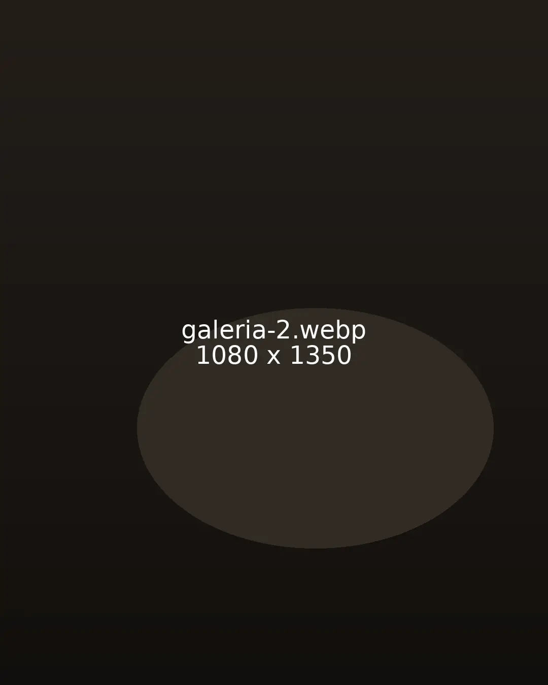
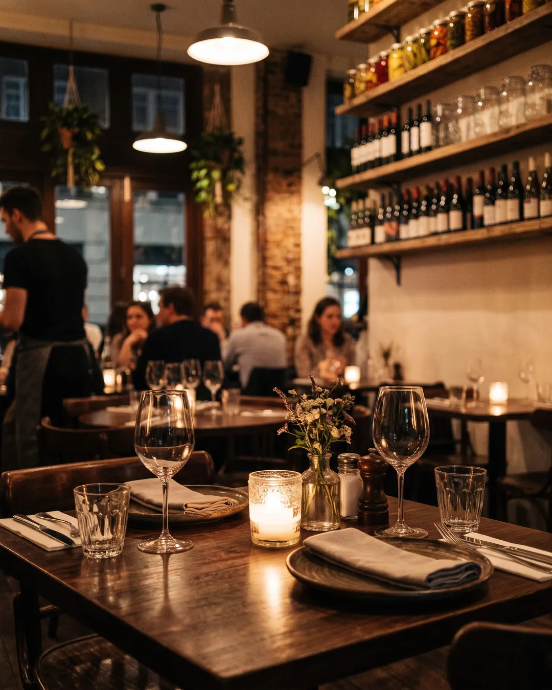
Inspiración
Desde su apertura, La Niebla ha construido una relación profunda con pequeños productores, creando platos que no solo celebran el sabor, sino que también impulsan la agricultura local. Nuestra filosofía es clara: cocinar desde el territorio.
Para Elena Quintero, la cocina es un diálogo permanente entre tradición y presente. No buscamos replicar recetas típicas, sino reinterpretar ingredientes, técnicas y memorias culinarias desde una perspectiva actual y consciente.
Esa exploración, entre regiones, productores, historias y sabores, es la que le da voz a este proyecto.
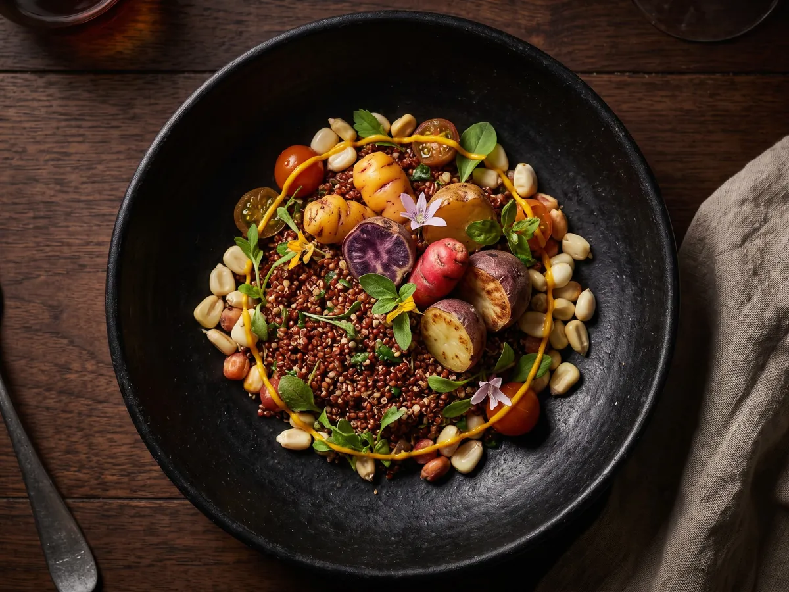
La chef, Elena Quintero
Elena Quintero es el corazón de La Niebla. Se formó en cocinas profesionales dentro y fuera del país y volvió para cocinar con lo que crece cerca. Su estilo combina la disciplina de la técnica clásica con el producto y la memoria de la montaña, y su propósito es sencillo: una cocina con lugar propio.
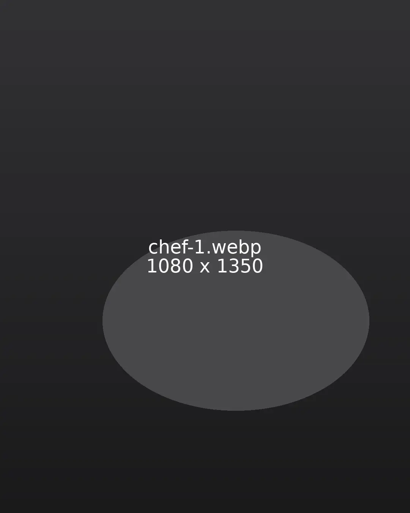
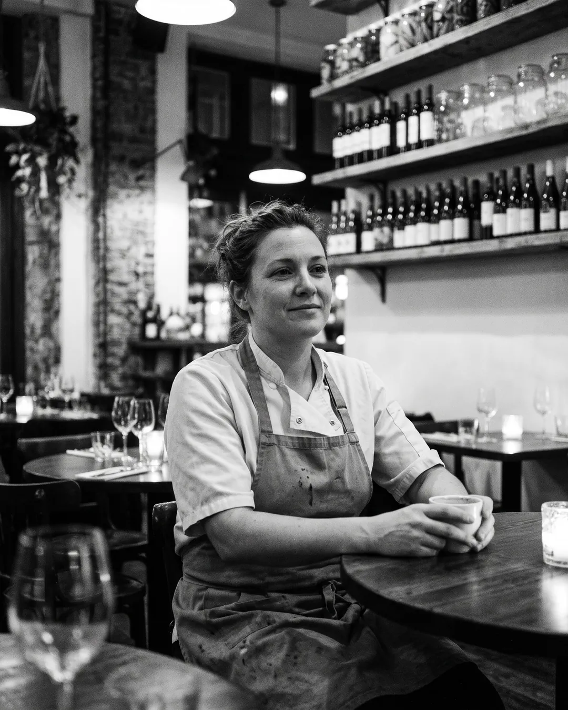
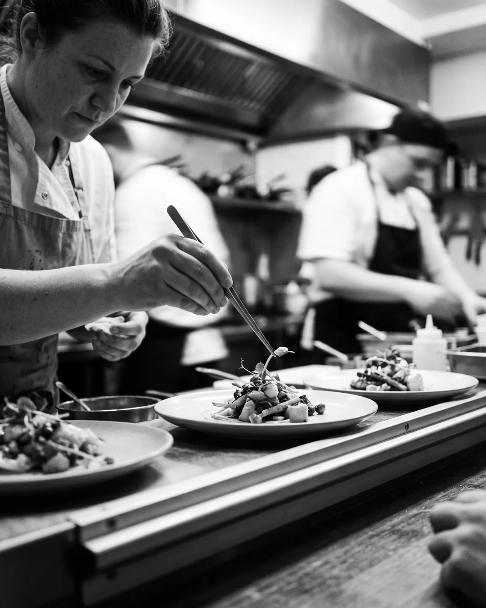
El equipo
El equipo de La Niebla comparte la misma pasión y compromiso que su chef. Cada persona contribuye al ambiente cálido y acogedor que distingue al restaurante, y su trabajo colectivo asegura que cada aspecto de la experiencia, desde la cocina hasta la mesa, esté cuidado.
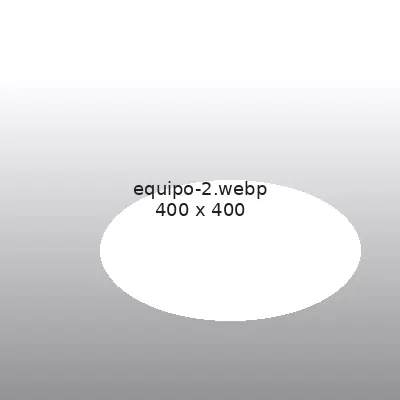
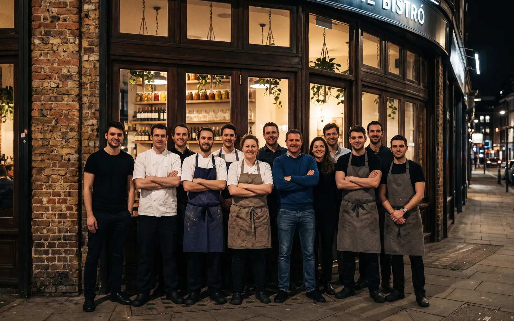
Reconocimientos
Aquí van los reconocimientos reales de tu restaurante. Los de abajo son ejemplos para mostrar el formato:
- 2021: Mejor apertura del año, Guía de ejemplo.
- 2022: Selección de cocina de autor, Premio de ejemplo.
- 2023: Entre los 10 mejores de la región, Guía de ejemplo; Distinción al servicio.
- 2024: Restaurante del año, Premio de ejemplo; Elección del público.
- 2025: Mejor chef, Guía de ejemplo; Distinción a la cocina sostenible.
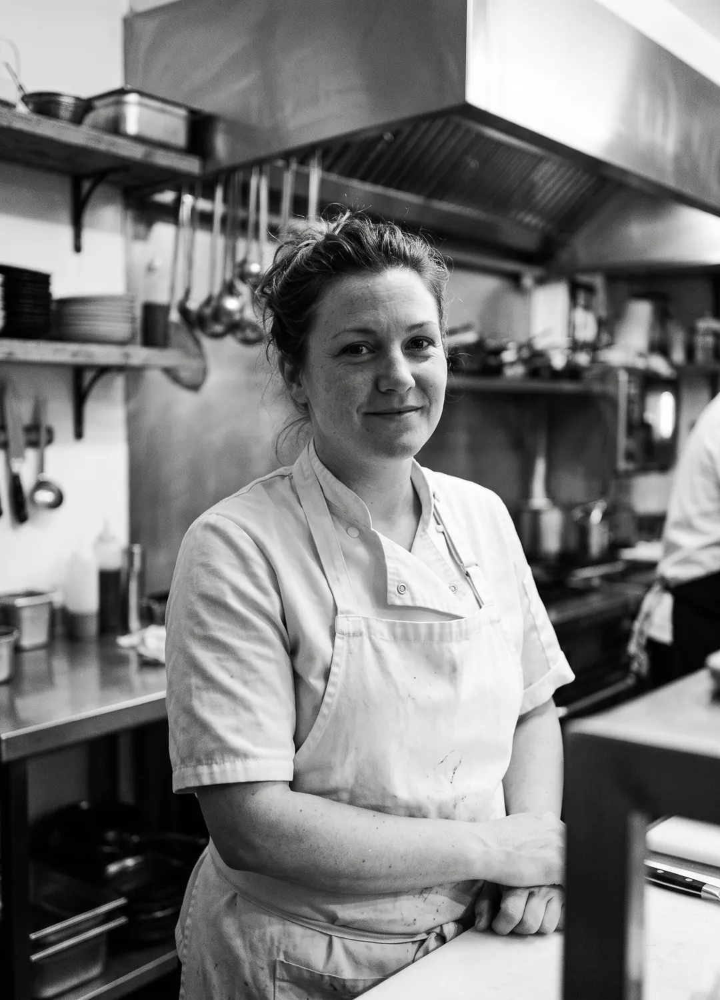
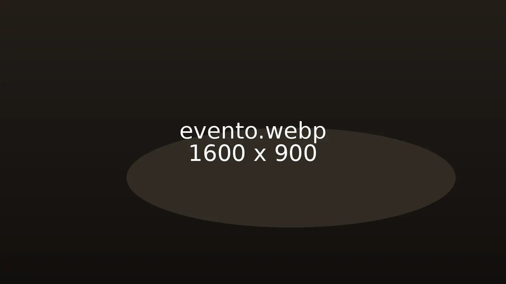
Horarios
LUNES Y MARTES: 2:00PM A 11:00PM
MIÉRCOLES A SÁBADOS: 12:00PM A 11:00PM
DOMINGOS: 12:00PM A 5:00PM
WhatsApp: +57 300 000 0000
Teléfono: +57 300 000 0000
Contacto
Reservas: reservas@laniebla.example
Negocios: mercadeo@laniebla.example
Prensa y alianzas: prensa@laniebla.example
Trabaja con nosotros: equipo@laniebla.example